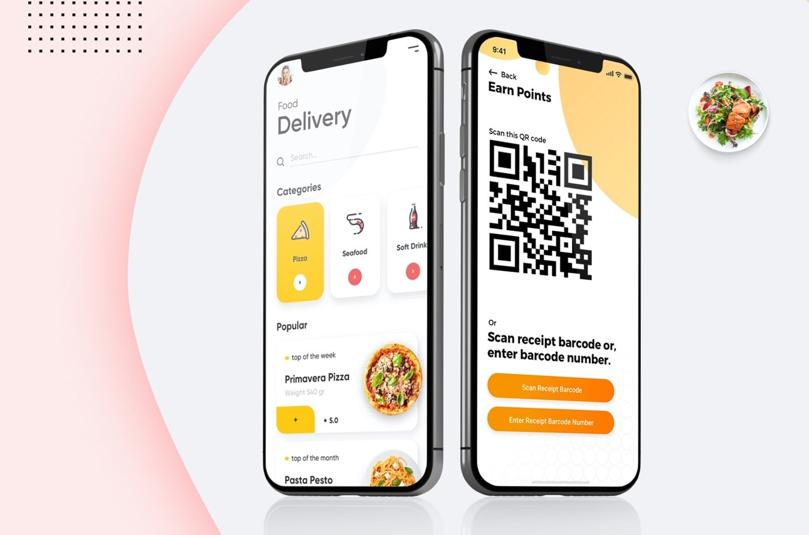
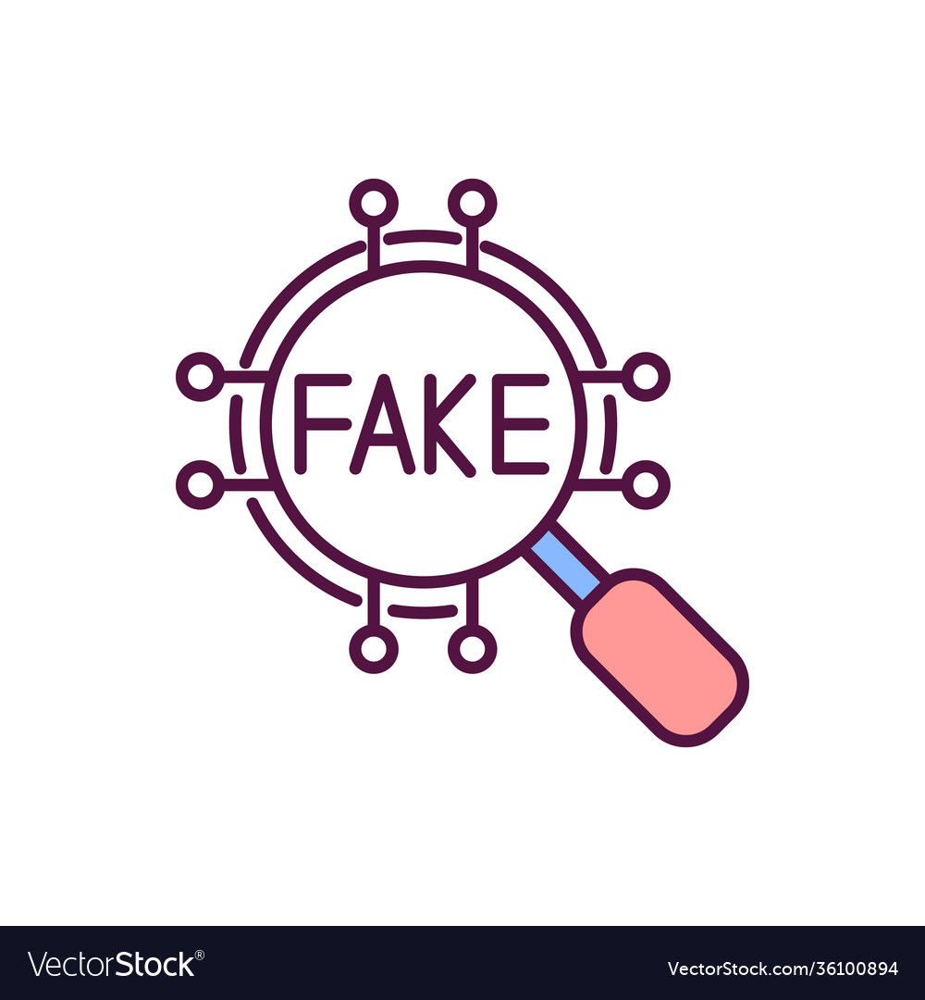
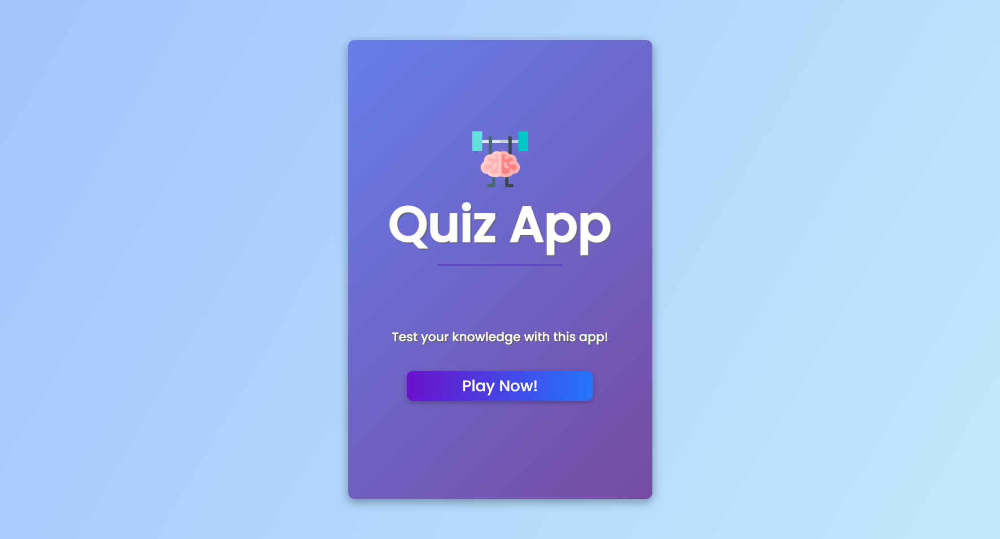
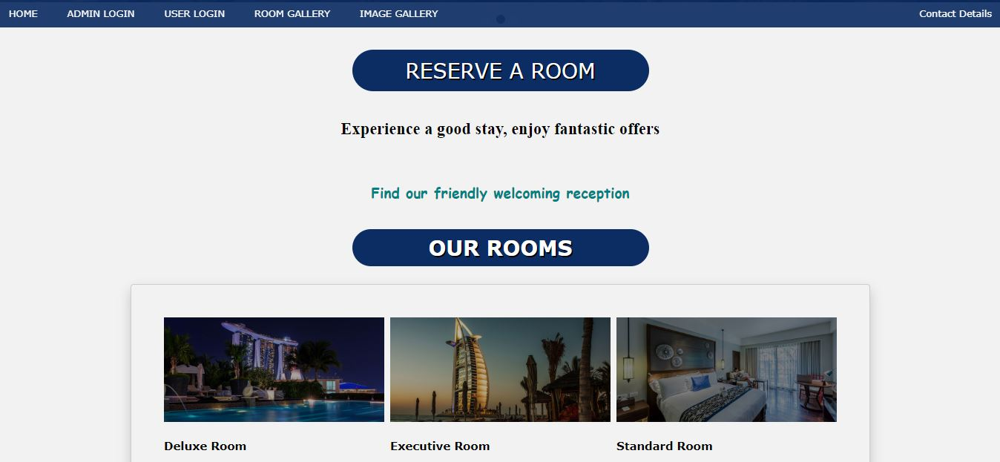

Welcome to Aman Kumar's Portfolio
Explore my projects, skills, and certifications.
About
Hello, I'm Aman Kumar. I am a Computer Science Engineer with experience in network management and software development. I am passionate about technology and love to create innovative solutions.
Education
Alliance University
Bachelor of Technology in Computer Science and Engineering
CGPA: 3.0/4.0
Bangalore, August 2020 - May 2024
VET BVL Polytechnic
Diploma in Computer Science
CGPA: 9.0/10
Bangalore, July 2017 - July 2020
Projects
Augmented Reality Application for Watches & Wrist Accessories
I developed an Augmented Reality (AR) application designed to revolutionize the shopping experience for watches and wrist accessories. This innovative app allows users to virtually try on various watches and wrist accessories in real-time through their smartphones or tablets. By leveraging AR technology, users can see how different watches and accessories look on their wrists without physically trying them on, providing a more immersive and convenient shopping experience. The application utilizes advanced 3D modeling and rendering techniques to ensure realistic visualization, enhancing user confidence in their purchasing decisions. This project not only showcases my proficiency in AR development but also demonstrates my commitment to leveraging technology to enhance consumer interactions and usability in the retail sector."
Enhancement of Restaurant Operations through QR Code Implementation
I developed an Android application aimed at enhancing restaurant operations through QR code integration, streamlining processes such as ordering, billing, and customer feedback. This innovative solution improved operational efficiency and customer experience by providing real-time updates and personalized interactions. Utilizing Java and Android Studio, I designed a user-friendly interface and integrated QR code functionalities to facilitate seamless communication between customers and restaurant staff. The project successfully modernized restaurant management, ensuring prompt service and increased customer satisfaction through effective use of digital technology.
Weather Monitoring Website
I developed a weather monitoring website utilizing HTML, CSS, JavaScript, and integrating a Weather API to provide real-time weather information to users. The website features a user-friendly interface where users can enter locations to retrieve current weather conditions, forecasts, and other relevant data. Leveraging HTML and CSS, I ensured a responsive design that adapts seamlessly across different devices. JavaScript was employed to handle API requests and dynamically update weather information on the site without requiring page reloads. This project not only honed my front-end development skills but also showcased my ability to integrate third-party APIs to deliver functional and engaging web experiences centered around real-time data.

Click here to see the project
Fake News Detection Using Machine Learning Techniques
I undertook a project focused on fake news detection using Artificial Intelligence and Machine Learning techniques. This involved implementing Natural Language Processing (NLP) algorithms to analyze text content and identify misleading or false information. Leveraging Python programming along with libraries such as scikit-learn and TensorFlow, I developed a model that could classify news articles based on their authenticity. The project included preprocessing text data, feature extraction, and training various machine learning models such as Support Vector Machines (SVMs) and Neural Networks. Through this project, I gained valuable experience in data preprocessing, model training, and evaluation, contributing to my proficiency in AI and ML application for tackling contemporary issues like misinformation.
Click here to see the project
Car Racing Game
I developed an interactive car game using HTML, CSS, and JavaScript, showcasing my skills in frontend web development and game design. The game features dynamic visuals and smooth gameplay, where players navigate a virtual road, avoiding obstacles and collecting points. It demonstrates my proficiency in implementing user interfaces, animations, and event handling to create an engaging and immersive gaming experience. This project not only highlights my technical abilities but also reflects my passion for crafting enjoyable interactive applications.
Click here to see the project
Quiz Application
Designed and developed an interactive quiz using HTML, CSS, and JavaScript to showcase my skills in frontend web development. The quiz features dynamic questions with multiple-choice answers, providing an engaging user experience. CSS styling ensures a visually appealing interface, while JavaScript handles quiz logic, including scoring and feedback mechanisms. This project not only demonstrates my proficiency in frontend technologies but also highlights my ability to create interactive and educational web applications..
Click here to see the project
Hotel Management System
I developed a comprehensive hotel management website using HTML, CSS, and JavaScript for the frontend to create a responsive and visually appealing user interface. The website allows users to browse hotel rooms, make reservations, and view booking details. For the backend, I utilized MySQL for database management and PHP for server-side scripting. MySQL was employed to store and manage hotel room data, user profiles, and booking information efficiently. PHP facilitated dynamic content generation, enabling functionalities such as user authentication, booking processing, and data retrieval from the MySQL database. This project not only enhanced my frontend development skills but also provided valuable experience in backend integration and database management in a real-world web application context."
Click here to see the project
Skills
Programming Languages
Java, C, C++, C#, Python, HTML, CSS, JavaScript, PHP
Libraries/Frameworks
Spring, .NET, Bootstrap, React, Vuforia
Tools and Platforms
VS Code, Eclipse, Atom, Jupyter Notebook, Google Colab, Apache Tomcat, Unity, Blender, GitHub, Linux, Windows
Databases
MySQL, Firestore, Firebase, MongoDB, NoSQL
Certifications
IBM Full Stack Development Course
Coursera

Training on Basic A+ LN+
Indian Institute of Hardware Technology
Python Programming
VET BVL Polytechnic
Resume
Contact
Email: amankumar82984@gmail.com
Phone: +91 8073195880